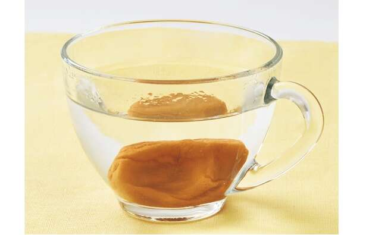

“简单混合即可！Zubora 速溶饮料饮食” （松田理惠/KADOKAWA）第1弹【共20集】
为了您的健康，为什么不换一种简单又美味的方式喝呢？护士、公共卫生护士、饮食教练松田理惠以“正确饮食就能减肥”为理念，设计了“Zubora速溶饮料”饮食法。用速溶饮料代替常规饮料，可以获得维生素、矿物质、蛋白质等，保持全天营养平衡，自然就能减肥。这次是松田先生的书“简单混合即可！Zubora 速溶饮料饮食”（角川）将向您介绍如何从内到外调理身体，实现轻松日常生活的秘诀。
*本文根据松田理惠的书《Just mix it up!》摘录并编辑自《Zubora Instant Drink Diet》。
梅花热水
梅干含有抑制碳水化合物吸收的成分，非常适合节食。它还有助于支持消化，因此非常适合舒缓胃和肠道。

4kcal、碳水化合物0.1g、蛋白质0.1g
材料
▪腌李子...1个
▪白水...150ml
如何制作
将梅干放入杯子中，倒入热水。
【MEMO】
梅干是一种极好的减肥食品，含有柠檬酸、苹果酸、儿茶酸等多种有机酸。如果一次吃完，酸会刺激空腹，所以最好以饮料的形式喝。